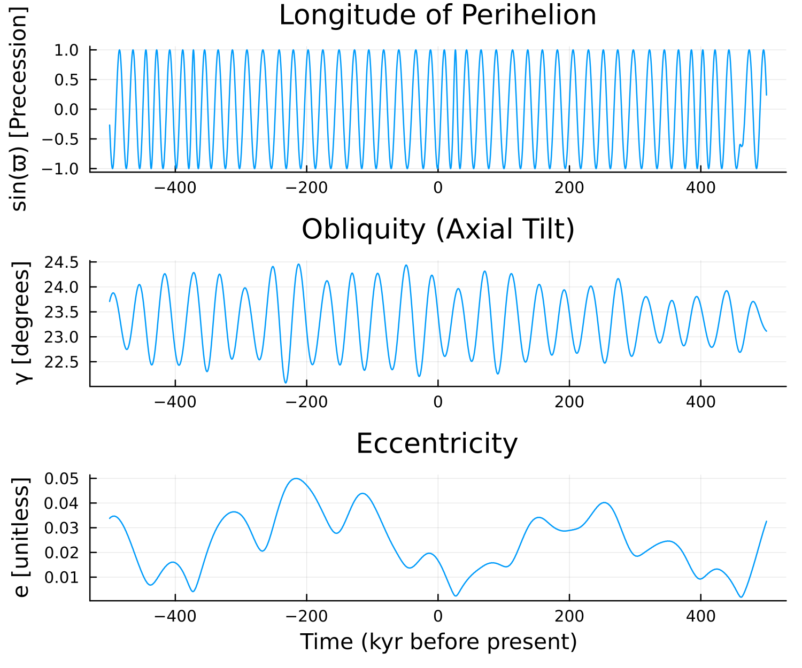
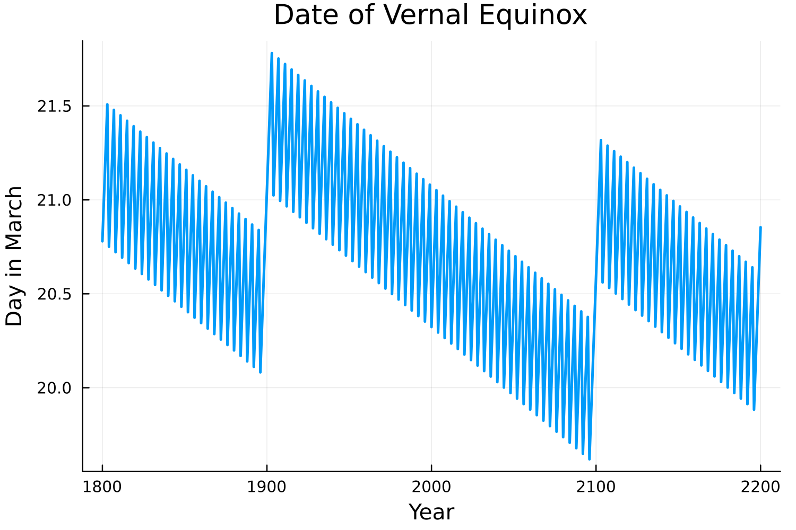
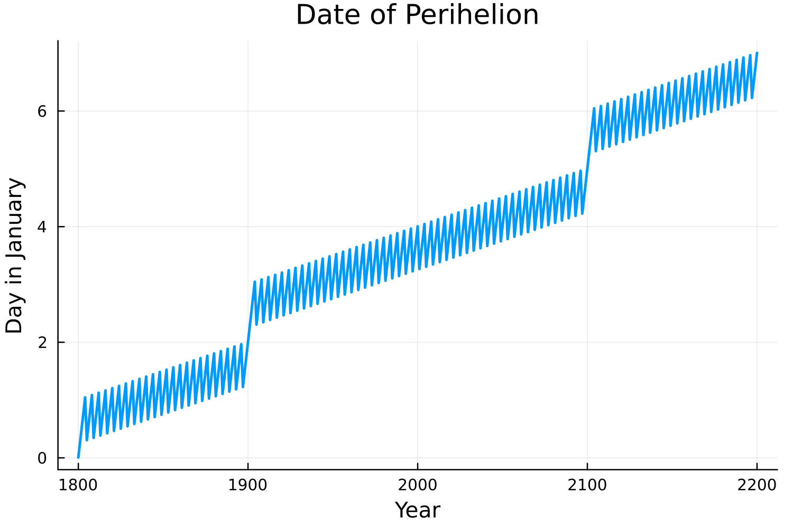
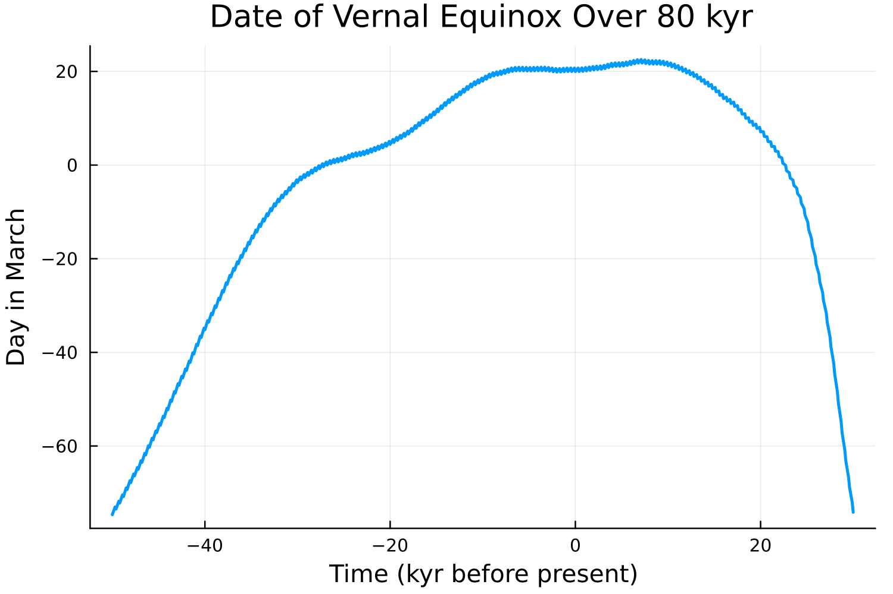

Milankovitch Cycles
Milankovitch cycles are variations in Earth's orbital parameters (eccentricity, obliquity, and precession) that occur over geological timescales. These cycles affect the distribution and amount of solar radiation reaching Earth's surface, driving long-term climate variations and ice age cycles.
Insolation.jl includes the Laskar et al. (2004) solution for Earth's orbital parameters, spanning -50 Myr to +20 Myr around the J2000 epoch. This allows accurate paleoclimate calculations for ice age studies, interglacial periods, and long-term climate reconstructions.
The Three Orbital Parameters
Eccentricity (e): The shape of Earth's orbit, ranging from nearly circular (e≈0) to more elliptical (e≈0.06). Current value: ~0.0167. Period: ~100,000 years.
Obliquity (γ): Earth's axial tilt, varying between ~22° and 24.5°. Current value: ~23.44°. Period: ~41,000 years. Controls the strength of seasonal cycles.
Precession (ϖ): The longitude of perihelion, determining when during the year Earth is closest to the Sun. Period: ~21,000 years. Affects the timing and intensity of seasons.
Variations in orbital parameters
using Insolation
using Plots
# Load orbital parameter data (Laskar et al. 2004)
od = OrbitalDataSplines()
# Time range: ±500,000 years from present (J2000)
dt = collect(-500e3:100:500e3); # years
# Extract orbital parameters over time
y = hcat(collect.(orbital_params.(od, dt))...);
ϖ, γ, e = y[1,:], y[2,:], y[3,:];
# Plot precession (as sin(ϖ) to show periodicity)
p1 = plot(dt ./ (1e3), sin.(ϖ), legend=false);
ylabel!("sin(ϖ) [Precession]");
title!("Longitude of Perihelion");
# Plot obliquity (axial tilt)
p2 = plot(dt ./ (1e3), rad2deg.(γ), legend=false);
ylabel!("γ [degrees]");
title!("Obliquity (Axial Tilt)");
# Plot eccentricity (orbital shape)
p3 = plot(dt ./ (1e3), e, legend=false);
ylabel!("e [unitless]");
xlabel!("Time (kyr before present)")
title!("Eccentricity");
plot(p1, p2, p3, layout = grid(3,1), size=(600,500), dpi=250);
savefig("orbital_params.png")
The three panels show the periodic variations in Earth's orbital parameters:
- Top: Precession varies with ~21 kyr period, controlling seasonal timing
- Middle: Obliquity oscillates between ~22-25° with ~41 kyr period
- Bottom: Eccentricity varies with ~100 kyr and ~400 kyr periods
Calendar Considerations: Equinox and Perihelion Dates
Centennial Timescales (1800-2200 CE)
On timescales of centuries, the dates of astronomical events like the vernal equinox and perihelion vary slightly due to precession and calendar adjustments.
using Insolation
using Roots
using Optim
include("find_equinox_perihelion_dates.jl")
years = 1800:2200;
days_eq = zeros(length(years));
days_per = zeros(length(years));
od = OrbitalDataSplines()
# Find vernal equinox and perihelion dates for each year
for (i,year) in enumerate(years)
# Vernal equinox: when declination crosses zero in spring
f = (x -> zdiff(x, year, od))
days_eq[i] = find_zeros(f,-30,60)[1]
# Perihelion: when planet-star distance is minimum
f = (x -> edist(x, year, od))
res = optimize(f,-50,50)
days_per[i] = Optim.minimizer(res)[1]
end
p1 = plot((years), days_eq, legend=false, dpi=250, lw=2)
xlabel!("Year")
ylabel!("Day in March")
title!("Date of Vernal Equinox")
savefig("equinox_dates.png")
p2 = plot((years), days_per, legend=false, dpi=250, lw=2)
xlabel!("Year")
ylabel!("Day in January")
title!("Date of Perihelion")
savefig("perihelion_dates.png")Historical Context: The Gregorian calendar reform (1582 CE) introduced leap years and century rules specifically to keep the vernal equinox near March 21. This stabilizes the calendar for seasonal events, but small variations still occur due to differences in the length of the tropical year (time from vernal equinox to vernal equinox) and the length of the calendar year.
 
Millennial Timescales (50,000 BCE - 30,000 CE)
On longer timescales, precession causes substantial shifts in the timing of the vernal equinox within the Gregorian calendar year.
using Insolation
using Roots
include("find_equinox_perihelion_dates.jl")
od = OrbitalDataSplines()
years = -50e3:100:30e3
days_eq = zeros(length(years))
# Calculate vernal equinox date over 80,000 years
for (i,year) in enumerate(years)
f = (x -> zdiff(x, year, od))
days_eq[i] = find_zeros(f,-100,100)[1]
end
plot((years / 1000), days_eq, legend=false, dpi=250, lw=2)
xlabel!("Time (kyr before present)")
ylabel!("Day in March")
title!("Date of Vernal Equinox Over 80 kyr")
savefig("equinox_dates_long.png")
Paleoclimate Applications: The vernal equinox date according to the Gregorian calendar still shifts substantially over millennia because even the Gregorian calendar does not precisely fix vernal equinox near March 21. For meaningful paleoclimate comparisons, scientists often reference the day of year relative to the vernal equinox (seasonal dating) rather than January 1 (calendar dating). It is common to define a calendar where March 21 defines vernal equinox (beginning of northern spring).
Using Milankovitch Cycles in Calculations
To use time-varying orbital parameters in your insolation calculations:
using Insolation
using Dates
# Load orbital data (do this once, it's computationally expensive)
orbital_data = OrbitalDataSplines()
# Create parameter set
params = InsolationParameters(Float64)
# Calculate for Last Glacial Maximum (20,000 years ago)
date = DateTime(2000, 6, 21) # Summer solstice (relative date)
lat = 65.0 # Arctic latitude
# Modern climate (fixed parameters)
F_modern, _, _, _ = insolation(date, lat, 0.0, params)
# LGM climate (time-varying parameters)
F_lgm, _, _, _ = insolation(
date, lat, 0.0, params;
orbital_data = orbital_data,
milankovitch = true
)
println("Modern summer insolation: $F_modern W/m²")
println("LGM summer insolation: $F_lgm W/m²")
println("Difference: $(F_lgm - F_modern) W/m²")This capability enables studies of ice age cycles, interglacial periods, and long-term climate evolution driven by orbital forcing.